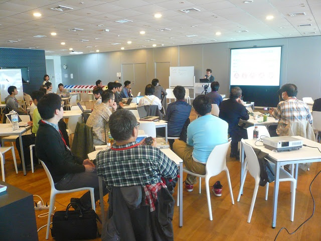
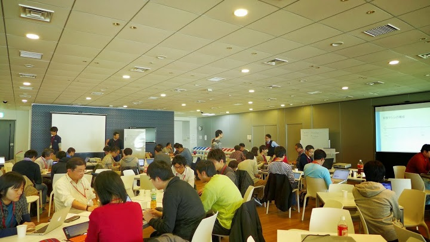

【参加レポート】第6回LODチャレンジデー パートナーリソース活用ハッカソン～パートナーの基盤やデータを活用した応募アプリの作り方～
2013年10月19日に第6回LODチャレンジデー パートナーリソース活用ハッカソン～パートナーの基盤やデータを活用した応募アプリの作り方～が株式会社ミクシィにて開催されました。今回はLODチャレンジ2013の作品応募に向けて、特にアプリケーション開発に利用できるリソースを理解し、使い方をマスターしようというイベントでした。約50名の方々にご参加いただき、LODチャレンジおよび昨年度事例紹介やデータ提供パートナーによるリソース紹介の説明の後、下記の3つのコースに分かれてハッカソンを行いました。各説明で使用した資料はこちらに公開していますのでご覧ください。
• モバイルアプリ開発コース
Monacaを利用してWebブラウザ上でモバイルアプリを開発し、Remote TestKitを用いてクラウド上のスマホ実機をレンタルして動作検証。
• クラウド環境を利用したLODサーバ開発コース
Windows AzureまたはCloudnを利用して、クラウド上にLODを公開するためのサーバ構築もしくは、外部のオープンデータを利用したWebアプリケーションサーバ構築。
• LinkDataを利用したデータ・アプリ開発コース
LinkDataを利用して、エクセルなどの表形式のデータを簡単にLODに変換して公開し、さらにそのオープンデータを利用してアプリを作成。
{kind=link}
今回はクラウド環境を利用したLODサーバ開発コースにご参加いただいた『株式会社おたに』の小谷祐一朗さんと、LinkDataを利用したデータ・アプリ開発コースにご参加いただいた『株式会社リブゲート』の神野光太郎さんから参加レポートをいただきましたので掲載いたします。
－－－－－－－－－－－－－－－－－－－－－－－－－－－－－－－－－－－
11/24にLODチャレンジデー パートナーリソース活用ハッカソンに参加しました。このイベントは統計センターの西村正貴様よりお誘いで参加の機会を頂きました。当日は多くの方の発表を聞いた後に、テーマごとに集まり、ピザを食べながら自己紹介をするというハッカソンらしい感じでスタートしました。

私が参加したのは「クラウド環境を利用したLODサーバ開発コース」です。このコースはクラウド環境をご提供頂いた二社の方から説明を受けながら、それぞれの各クラウド環境を使って「何か」をつくるという趣旨のものでした。私が参加したコースではSPARQLに関連するアプリケーション等のインストールを行いました。SPARQL関連は全く知らなかったのですが、加藤文彦様のご説明もあり、徐々に理解を深めていきました。また、オープンストリートマップに関しても加藤様のプレゼンテーションで理解を深めることができ、ご紹介頂いた「Leaflet」は早速使ってみた次第です。
短時間だったこともあり、「何か」というのはできなかったのですが、様々な知見を得られたことで非常に有意義なイベントでした。また、場所を移して行われた懇親会では様々な方と舌が滑らかな状態で、議論ができたこともよい経験でした。今後もこういったイベントには積極的に参加させて頂き、新たな知見を得られればと思います。
ありがとうございました。
株式会社 おたに
小谷 祐一朗
－－－－－－－－－－－－－－－－－－－－－－－－－－－－－－－－－－－
こんにちは、神野光太郎と申します。2013/11/24 (日)に株式会社ミクシィにて行われた「第6回LODチャレンジデー パートナーリソース活用ハッカソン」に参加しましたので報告いたします。
★参加の動機
今回は、LODについての理解を深めることと、データ作成および公開についての手順やツールについて学びたいと思い参加いたしました。
★事前の準備
イベントページを見ただけで準備はしませんでした。
★参加内容
3つあるコースの内、「LinkDataを利用したデータ・アプリ開発コース」に参加しました。コースの概要は、「LinkDataを利用して、エクセルなどの表形式のデータを簡単にLODに変換して公開し、さらにそのオープンデータを利用してアプリを作成。」（イベントページからの引用）というものです。
まず最初にサポーターの下山さんより「LODについて」の説明と「LinkData」に関しての説明がありました。丁寧な説明で、事前準備をしませんでしたが、午後の「データソン／ミニハッカソン」のイメージが湧きました。「データソン／ミニハッカソン」では、乙守さんより提供いただいた国体の都道府県別の順位と各経済指標のデータ（開催時は、提供元への確認中で非公開とし限定利用）をLinkDataを用いて、LOD変換しました。
LOD変換をした後、LinkData Appの逆マッシュアップを利用し、既にあるWebアプリのデータのみを入れ替えて、地図上にLODを表示するアプリを作成しました。ここで、Forkしたアプリは「統計データを地図上に表示するアプリ」で、利用しているデータは、以前に乙守さんが、作成したものとのことでした。
乙守さんのスライドに「LODの強みは自由につながる可能性にある」とあった通り、LODの面白さを感じました。また作成したwebアプリをMonaca（アシアル株式会社）を利用して、iOSアプリとして移植し、デバックアプリでiPhone端末での動作確認行うことが出来ました。（サポーターの生形さんに個別にご教示いただきました。）

★これから
今回のデータを用いた競技人口、施設の数などの比較を可視化するアプリを完成させたいと思います。LODとして公開されたデータを組み合わせたり、逆マッシュアップの仕組みを利用したりすることで、アプリ作成はとても簡単に感じました。なのでLODを使って何がしたいか、どんな社会貢献が出来るかを考えることが重要だと思いました。
★謝辞
最後になりましたが、LODチャレンジ実行委員会、データを提供していただいた乙守さん、サポーターの下山さん、同じコースで参加し意見を交換させていただいた方々へこの場をかりて改めて感謝申し上げます。
ありがとうございました。
株式会社 リブゲート
神野光太郎